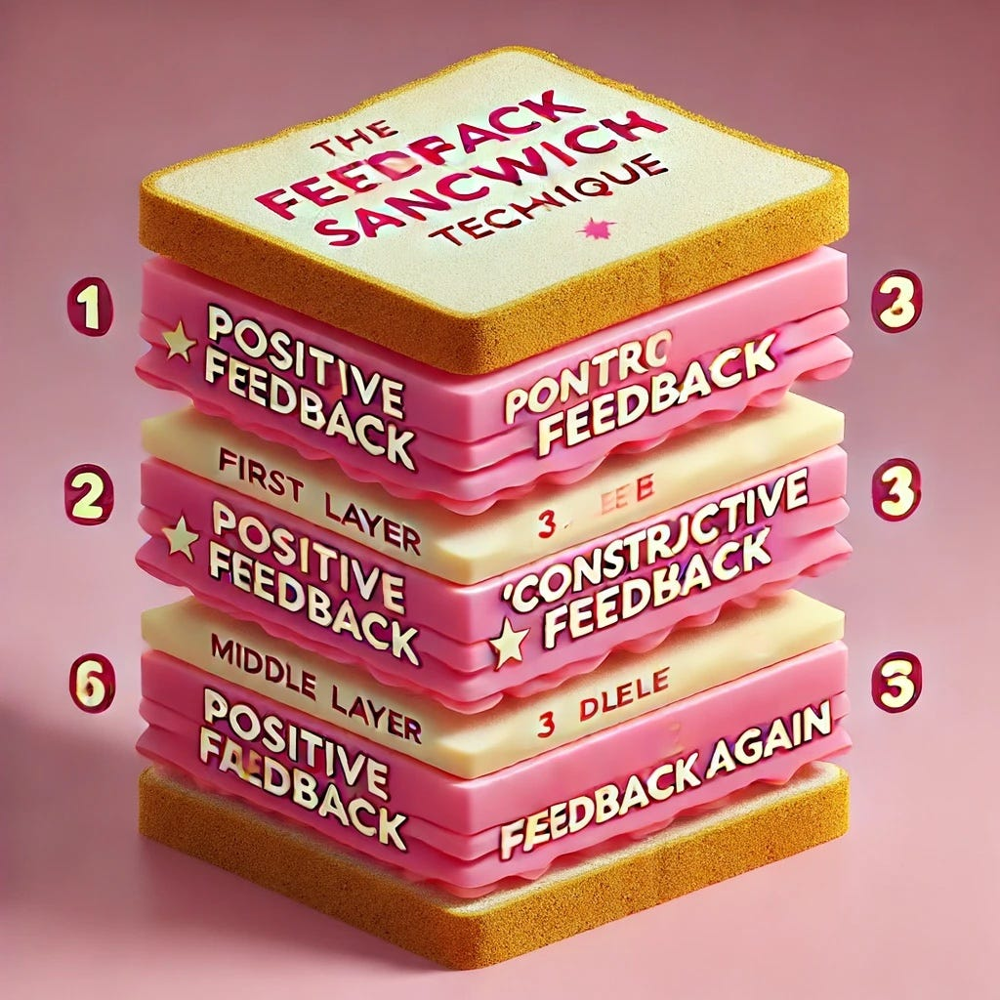

Feedback Sandwich

คิดว่าทุกคนน่าจะชอบพัฒนาตัวเองให้เป็น the best version อยู่เสมอ และคงจะเป็นเรื่องดีถ้าเราได้รับ real feedback เพื่อนำมาใช้พัฒนาปรับปรุงตัวเอง และจะยิ่งดีมากขึ้นแบบยิ้มหน้าบาน ถ้าคนให้ feedback ให้แบบครบถ้วนทั้งข้อดีข้อเสียของผู้รับ feedback นะคะ
เกริ่นมา เพราะวันนี้อยากเขียนอยากชวนทุกคนมาฝึกใช้ feedback sandwich กันค่ะ
ก่อนอื่น เรามารู้จักเจ้า feedback sandwich กันก่อนนะคะ
เจ้า feedback sandwich คือ เทคนิคนี้ได้รับความนิยมในด้านการสื่อสารเชิงบวก แต่เท่าที่กิม search มา ยังไม่พบว่าใครเป็นผู้คิดค้นค่ะ
เทคนิคนี้ถูกเรียกว่า feedback sandwich ก็เพราะเค้าถูกออกแบบมาให้มีโครงสร้างสามชั้นค่ะ ดังนี้
1- เริ่มจากชื่นชม กล่าวถึงข้อดีของผู้รับ feedback
2- สอดไส้ด้วยประโยคเชิงสร้างสรรค์ในสิ่งที่ต้องการให้ผู้รับ feedback พัฒนาปรับปรุง
3- ปิดจบด้วยคำชมเชยอีกครั้งเพื่อเสริมสร้างจุดแข็ง และสร้างความรู้สึกที่ดีให้กับผู้รับ feedback
ในครั้งแรกที่กิมได้รับการสอนให้รู้จักเทคนิคนี้ ก็มีความขัดแย้งในใจว่า “เป็นการสื่อสารแบบไม่จริงใจหรือป่าวเนี่ย?!?” แต่พอได้ทบทวน และลองปรับใช้แบบจริงใจใส่ใจดู ก็พบว่า หากเรามุ่งมั่นตั้งใจที่จะให้ feedback ที่เป็นประโยชน์จริงๆ ด้วยความหวังดี เราจะค้นพบข้อดีในตัวผู้รับ feedback และจะคิดประโยคสร้างสรรค์ เพื่อใช้ในการสร้างความรู้สึกดีต่อคนที่เราหวังดีด้วยได้เองตามความเป็นจริงอย่างจริงใจค่ะ
ตัวอย่างที่กิมสื่อสารจริง (ขออนุญาติน้องที่รับ feedback มาแล้วก่อนเผยแพร่ค่ะ)
1- เอเป็นคนที่ทำงานเนี้ยบ ละเอียดรอบคอบมากๆ เป็นอันดับต้นๆ ในทีมเลยนะ
2- ถ้าปรับเรื่องมาทำงานสาย แค่เรื่องเดียว คือ ไร้เทียมทานไม่มีที่ติ
3- ตลอดมาเอเป็นแบบอย่างที่ดีมากให้กับพวกเรา อยากให้คงไว้ และพัฒนาต่อไปให้ดีขึ้นไปอีกนะคะ
อ่านตัวอย่างจบ ก็อยากได้ feedback แบบนี้บ้างจังค่ะ
พวกเรามาเตรียม feedback ให้อร่อยคำโตๆ กันนะคะ